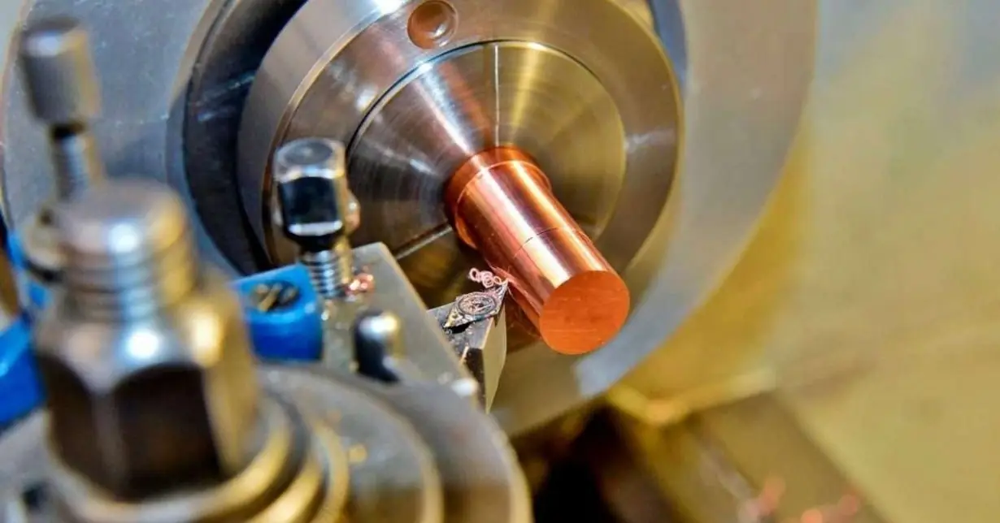

Em muitas fábricas a cena se repete: uma peça de uma máquina quebra, o fabricante já não existe ou não vende mais a reposição, e o desenho técnico nunca veio junto com o equipamento. Em máquinas importadas o problema é parecido, porque a peça existe, mas leva semanas para chegar e custa caro. Enquanto isso, a linha fica parada ou rodando com uma solução provisória que ninguém sabe quanto tempo vai aguentar.
A engenharia reversa resolve esse impasse. Ela parte da peça física para chegar ao projeto completo, com modelo 3D, desenho técnico e tolerâncias. Com o projeto pronto, a peça pode ser fabricada quantas vezes for preciso, aqui no Brasil, e ainda pode ser melhorada.
Quando a engenharia reversa é o caminho
Ela costuma ser a melhor saída em algumas situações bem comuns na manutenção industrial:
- máquinas antigas ou de fabricantes que encerraram as atividades;
- equipamentos importados cuja reposição demora ou custa muito;
- peças que quebram com frequência e precisam de um projeto mais resistente;
- máquinas que foram modificadas ao longo dos anos e não batem mais com o desenho original;
- quando a empresa quer ter o projeto das peças críticas para não depender de um único fornecedor.
O que precisamos receber
O ideal é a própria peça, mesmo gasta, trincada ou quebrada em mais de um pedaço. Quando ela não pode sair da máquina, fotos com medidas ajudam a fazer uma primeira avaliação, e em alguns casos vale uma visita técnica para medir no local.
Também ajuda muito saber onde a peça trabalha, com qual produto e em qual velocidade, qual era o material original (se alguém souber), quanto tempo ela durou e como falhou. Uma peça que gastou por atrito pede uma solução diferente de uma que trincou por fadiga. Essas informações mudam a escolha do material, do tratamento e do acabamento.
Como funciona o processo
- Levantamento da função. Antes de medir, entendemos o papel da peça na máquina: o que encaixa nela, quais cotas são de montagem e quais são de folga, onde ela recebe esforço.
- Digitalização e medição. A peça é medida no laboratório e digitalizada em máquina tridimensional. As cotas funcionais, como diâmetros de ajuste, posições de furos, perfis e roscas, recebem atenção especial.
- Modelagem 3D e desenho técnico. As medidas viram um modelo sólido e um desenho com tolerâncias e acabamento. A partir daqui o cliente passa a ter o projeto da peça, coisa que antes não existia.
- Revisão do projeto. Se a peça quebra sempre no mesmo ponto, ajustamos o projeto antes de usinar.
- Usinagem e conferência. A peça é usinada em CNC e conferida contra o modelo antes de sair da fábrica, para chegar pronta para montar.
- Teste na máquina. A primeira peça é instalada e acompanhada. Depois de aprovada, fica fácil fabricar o lote de reposição.
Quando a peça está muito danificada
Desgaste e deformação apagam parte das medidas originais. Um furo ovalizado, uma face gasta ou uma rosca danificada não mostram mais a medida de projeto. Nesses casos cruzamos o que sobrou da peça com as peças que se encaixam nela na máquina, porque são elas que dizem qual era a medida certa. Por isso, às vezes pedimos também a peça vizinha, o eixo onde ela monta ou uma medida da carcaça.
Quando existem duas ou mais peças iguais com desgastes diferentes, medir todas ajuda a reconstruir a geometria com mais segurança.
Copiar ou melhorar
A engenharia reversa não precisa ser uma cópia fiel dos defeitos da peça original. Se ela trinca sempre no mesmo canto, provavelmente o raio ali é pequeno demais e concentra esforço. Se gasta rápido, talvez o material não seja o mais adequado para o produto, para a temperatura ou para a limpeza usada na sua fábrica. Se deforma, pode faltar espessura em alguma região.
Na nova versão dá para corrigir esses pontos mantendo todas as cotas de montagem iguais às da original. A peça continua encaixando na máquina sem nenhuma adaptação, mas passa a durar bem mais. Para a manutenção, isso significa menos paradas e menos trocas, e não apenas uma reposição mais barata.
Materiais mais comuns
A escolha depende da aplicação. Em peças de máquinas das indústrias farmacêutica, cosmética e alimentícia, o inox AISI 316L é o padrão nas partes que tocam o produto. Em peças de desgaste e de transmissão aparecem aços liga com tratamento térmico. Polímeros de engenharia, como POM, PEEK e UHMW, são usados em guias, buchas e peças que deslizam ou tocam a embalagem.
O que a fábrica ganha
Além de resolver a parada daquele momento, a fábrica fica com o projeto documentado da peça. Na próxima quebra, ou antes dela, basta pedir uma nova unidade, sem repetir a medição. Com isso a manutenção consegue manter estoque das peças críticas e planejar a reposição em vez de correr atrás da urgência.
Se você tem uma peça nessa situação, mande fotos com medidas ou a descrição do problema pelo formulário abaixo ou pelo WhatsApp. Avaliamos e dizemos qual é o melhor caminho, inclusive se vale a pena melhorar o projeto.
Saiba mais sobre o nosso serviço de engenharia reversa.